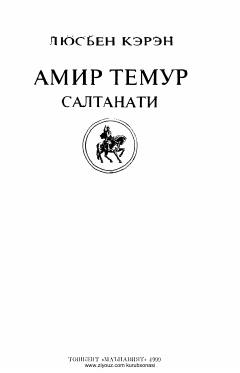

ATSohibqiron Amir Temur hayoti va saltanatiga bag'ishlangan tarixiy roman.
Fransuz yozuvchisi Lyusyen Kerenning bu asari Amir Temurning hayoti, saltanati va uning avlodlari — Shohruh Mirzo, Ulug'bek va Bobur haqida hikoya qiladi. Kitob 1974-yilda Shveytsariyada nashr etilgan bo'lib, 1999-yilda o'zbek tiliga tarjima qilingan. Asar Samarqand tarixidan boshlanib, sohibqironning dunyoga kelishidan umrining oxirigacha bo'lgan hayot yo'lini qamrab oladi.